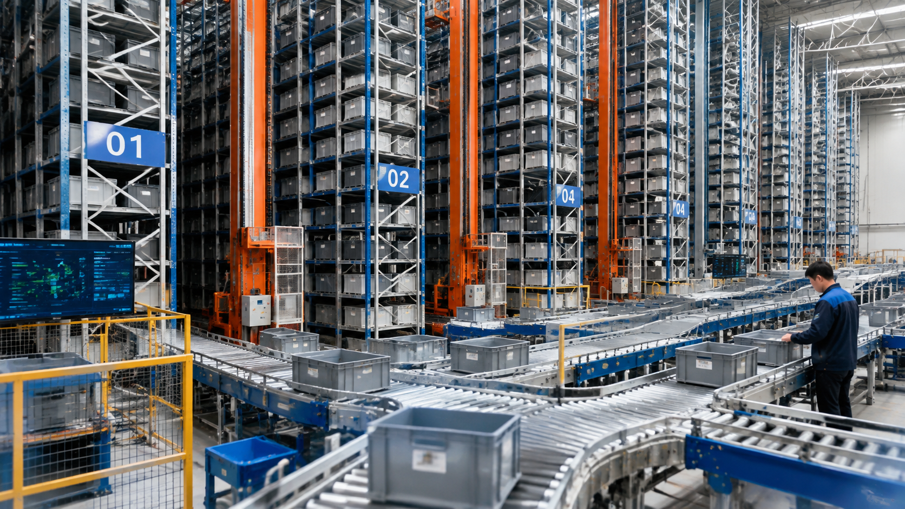

4-Aisle Mini Load ASRS Warehouse Automation System for High SKU Storage and Fast Picking

Summary
High-Speed Mini Load ASRS Solution for High SKU Warehouse Operations
Modern warehouses are facing increasing challenges from growing SKU numbers, faster order fulfillment requirements, limited storage space, and rising labor costs.
This project demonstrates a 4-aisle Mini Load ASRS warehouse automation system designed for high SKU storage environments with frequent picking operations.
The solution integrates:
Multi-aisle high-speed stacker crane ASRS
Automated bin storage system
Conveyor transportation system
Sorting system
Goods-to-person picking stations
Warehouse control and management systems
The system enables automated storage, retrieval, transportation, and picking processes, helping warehouses achieve:
Higher storage density
Faster order processing
Improved inventory accuracy
Reduced labor dependency
More efficient warehouse operations
This type of automated warehouse solution is widely suitable for:
E-commerce fulfillment centers
Retail distribution warehouses
Spare parts storage facilities
High SKU inventory management environments
Technology
- Project Background
- Challenges of High SKU Warehouse Operations
- With the rapid growth of e-commerce and retail industries
- warehouses are required to manage thousands of SKUs while maintaining fast order fulfillment speed.
- Traditional warehouse operations often face several challenges:
- Limited Storage Capacity
- Conventional shelving systems require large operation aisles and cannot fully utilize vertical warehouse space.
- As SKU numbers increase
- companies need more warehouse area to maintain inventory.
- Slow Picking Efficiency
- In traditional warehouses
- operators need to manually travel between storage locations to find products.
- This person-to-goods picking method increases:
- Walking distance
- Order processing time
- Human workload
- High Labor Dependency
- Large-scale manual warehouse operations require many employees for:
- Storage handling
- Product searching
- Picking activities
- Inventory checking
- Increasing labor costs make traditional warehouse models difficult to scale.
- Complex Inventory Management
- High SKU warehouses require accurate inventory tracking and fast response to changing customer demands.
- Manual management often creates:
- Inventory errors
- Low visibility
- Inefficient replenishment
Challenge
Project Requirements
Automated Warehouse Requirements
The customer required an intelligent warehouse solution capable of handling a large number of SKUs with high-frequency order picking requirements.
The main requirements included:
High-density storage capability
Fast automatic storage and retrieval
Reduced manual operation
Accurate inventory management
Continuous connection between storage and picking processes
The final solution needed to combine storage efficiency with fast order fulfillment performance.
Solution
4-Aisle Mini Load ASRS Architecture
The project adopts a multi-aisle Mini Load ASRS system consisting of four independent storage aisles.
Each aisle is equipped with a high-speed stacker crane responsible for automatic bin storage and retrieval.
The four stacker cranes operate independently while being coordinated through the warehouse control system.
The complete workflow includes:
Warehouse receiving
↓
Automated bin identification
↓
Automatic storage by stacker crane
↓
Order processing through WMS/WES
↓
Automatic retrieval
↓
Goods-to-person picking
↓
Sorting and outbound delivery
Workflow & Layout
From Receiving to Shipping
Step 1: Receiving Process
Incoming products are registered into the warehouse management system.
The system assigns appropriate storage locations according to product information.
Step 2: Automated Storage
Bins are transported automatically to assigned locations.
Stacker cranes complete storage operations with high positioning accuracy.
Step 3: Order Management
Customer orders are received by the warehouse management system.
The system analyzes:
Product information
Storage location
Picking priority
Step 4: Automatic Retrieval
The Mini Load ASRS automatically retrieves required bins.
Multiple aisles can operate simultaneously to improve throughput.
Step 5: Goods-to-Person Picking
The required products are delivered to operators through automated transportation systems.
Operators complete picking without walking through storage aisles.
Step 6: Sorting and Shipping
After picking, products enter sorting and outbound processes.
The complete workflow improves order fulfillment speed and accuracy.
Results & ROI
- Investment Value of Mini Load ASRS
- The value of an automated warehouse system is not only reflected in equipment investment but also in long-term operational improvements.
- Key ROI factors include:
- Labor Cost Reduction
- Automation reduces dependency on manual warehouse operators.
- Storage Capacity Improvement
- Higher storage density reduces the need for additional warehouse expansion.
- Productivity Improvement
- Faster picking and retrieval improve warehouse throughput.
- Operational Stability
- Automated systems provide more predictable and consistent warehouse performance.
Equipment List
- Core System Components
- High-Speed Mini Load Stacker Crane System
- The stacker cranes are the core equipment of the automated storage system.
- They provide:
- High-speed bin handling
- Accurate positioning
- Stable continuous operation
- Automatic storage and retrieval capability
- Each crane operates within its assigned aisle while cooperating with the overall warehouse control system.
- Automated Bin Storage System
- The Mini Load ASRS uses standardized storage bins designed for small and medium-sized products.
- The automated bin storage structure provides:
- High-density storage
- Better space utilization
- Faster inventory access
- Improved storage organization
- This makes it especially suitable for warehouses with thousands of different SKUs.
- Conveyor Transportation System
- The automated conveyor system connects storage areas with picking and sorting stations.
- The material flow includes:
- Storage area
- ↓
- Conveyor transportation
- ↓
- Picking station
- ↓
- Sorting area
- ↓
- Shipping process
- This creates a continuous automated warehouse workflow.
- Goods-to-Person Picking System
- Instead of workers walking through the warehouse searching for products
- the system automatically delivers required bins to operators.
- This approach significantly improves:
- Picking speed
- Operator efficiency
- Order accuracy
- Warehouse productivity
Project Overview / Opening
Automation Technology Integration
Intelligent Warehouse Control System
The Mini Load ASRS can integrate with warehouse software systems including:
WMS (Warehouse Management System)
Responsible for:
Inventory management
Order management
SKU tracking
Warehouse planning
WCS/WES (Warehouse Control and Execution System)
Responsible for:
Equipment coordination
Task scheduling
Real-time operation control
System optimization
Through software integration, the warehouse becomes a connected and intelligent operation system.
Key Points
- Application Industries
- E-commerce Warehouse Automation
- Suitable for:
- Online retail fulfillment centers
- Fast-moving consumer product warehouses
- Multi-SKU order processing environments
- Retail Distribution Centers
- The system helps retailers improve:
- Inventory management
- Store replenishment efficiency
- Distribution speed
- Spare Parts Storage
- Ideal for:
- Automotive spare parts
- Industrial components
- Electronic parts
- Small equipment accessories
- Manufacturing Logistics
- Suitable for factories requiring:
- Raw material storage
- Production line supply
- Finished product management
Implementation / Workflow
Traditional Warehouse Challenges and Mini Load ASRS Solution
Traditional Warehouse Model
Traditional warehouses usually depend on manual storage and picking operations.
Common limitations include:
Lower storage density
Longer picking routes
Higher labor requirements
Slower order fulfillment
More manual inventory management
Mini Load ASRS Automated Warehouse Model
Mini Load ASRS improves warehouse performance through:
Automated bin storage
High-density vertical utilization
Goods-to-person picking
Faster retrieval process
Digital inventory management
Reduced labor dependency
The automation model helps companies build a more efficient and scalable warehouse system.
Customer Value / Results
Business Benefits
Improved Warehouse Efficiency
The automated system increases overall warehouse productivity through faster storage and retrieval operations.
Reduced Labor Dependency
Automation reduces repetitive manual handling tasks and improves operational stability.
Better Space Utilization
High-density storage allows companies to maximize existing warehouse space.
Higher Order Accuracy
Automated processes reduce human errors during storage and picking.
Faster Customer Response
Improved fulfillment speed helps companies meet increasing delivery requirements.
Conclusion / Next Step
Why Choose 13ASRS
China Industrial Automation Project Integration Partner
13ASRS helps global companies design, source, integrate, and deliver industrial automation projects from China's manufacturing ecosystem.
Our service includes:
Warehouse automation consulting
ASRS solution design
Supplier coordination
System integration
Project management
Factory acceptance testing
Delivery support
We focus on helping customers find the right automation solution instead of simply selling individual machines.
Call To Action
Need a High SKU Warehouse Automation Solution?
If you are planning:
E-commerce warehouse automation
Retail distribution center upgrade
Spare parts storage automation
Smart warehouse transformation
Our team can help evaluate:
Warehouse layout
ASRS system design
Automation strategy
Project investment requirements
Get your customized Mini Load ASRS solution and project evaluation today.
SEO Title
4-Aisle Mini Load ASRS Warehouse Automation System for High SKU Storage and Fast Picking
SEO Description
High-Speed Mini Load ASRS Solution for High SKU Warehouse Operations
Modern warehouses are facing increasing challenges from growing SKU numbers, faster order fulfillment requirements, limited storage space, and rising labor costs.
This project demonstrates a 4-aisle Mini Load ASRS warehouse automation system designed for high SKU storage environments with frequent picking operations.
The solution integrates:
Multi-aisle high-speed stacker crane ASRS
Automated bin storage system
Conveyor transportation system
Sorting system
Goods-to-person picking stations
Warehouse control and management systems
The system enables automated storage, retrieval, transportation, and picking processes, helping warehouses achieve:
Higher storage density
Faster order processing
Improved inventory accuracy
Reduced labor dependency
More efficient warehouse operations
This type of automated warehouse solution is widely suitable for:
E-commerce fulfillment centers
Retail distribution warehouses
Spare parts storage facilities
High SKU inventory management environments
Related Blog
Start with Your Business Challenge
Tell us about your warehouse, factory, or production requirements. We'll help you explore practical automation solutions and relevant project references.